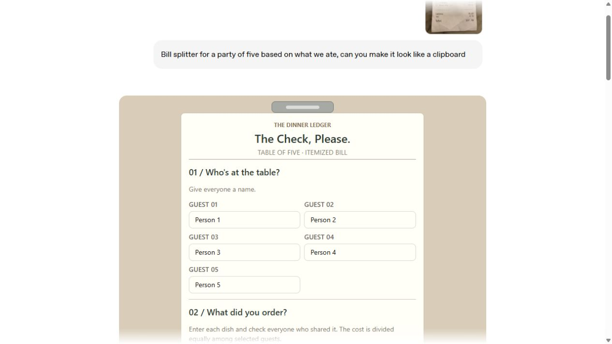
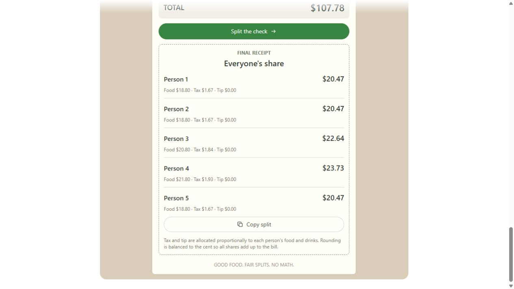

AI NEWS ISSUE 10
AI가 화면을 만들고,
작은 모델이 판단하며,
실행은 격리한다
대화 속 계산기부터 저렴한 분류 모델, 실행 권한을 제한하는 도구까지. AI에게 일을 나눠 맡기는 방법을 살펴봅니다.
AT A GLANCE
30초 요약
- 화면 ChatGPT의 Intelligent UI는 질문에 답하면서 대화창 안에 버튼·차트·계산기를 만들어 줍니다.
- 비용 Haiku 5.5는 요약·분류 같은 반복 작업의 비용을 낮추는 모델입니다. 요청에 담긴 내용이 얼마나 긴지에 따라 단가가 달라집니다.
- 판단 Decisions API는 문의를 분류하거나 우선순위를 매기는 데 쓸 수 있습니다. 현재 공개 시험 서비스로 제공됩니다.
- 실행 MXC와 Copilot의 샌드박스는 AI가 어떤 파일과 네트워크에 접근할 수 있는지 제한합니다.
- 검사 GitHub은 주변 코드까지 읽어 비밀번호를 찾는 새 모델을 도입했습니다. 일부 검사 기능은 아직 제한된 사용자에게만 제공됩니다.
10월 6~7일의 공식 발표와 관련 문서를 2026년 10월 8일 한국시간 기준으로 확인했습니다. 발표 날짜는 각 회사의 표기를 따릅니다. 비용·성능 수치는 발표사의 설명이며, 업무에 적용할 아이디어는 모임의 해석으로 구분했습니다.
AI에게 비용 비교를 부탁하면, 직접 값을 바꿔볼 수 있는 계산기로 답을 받을 수 있습니다. 고객 문의를 작은 모델이 분류하게 하거나, AI가 미리 허용한 폴더 안에서만 파일을 수정하도록 제한할 수도 있습니다. 최근 발표들은 AI를 업무에 쓰는 방식이 어떻게 달라지고 있는지 보여줍니다.
OpenAI와 Anthropic은 화면을 만들고 반복 작업을 처리하는 기능을 넓혔습니다. Microsoft와 GitHub은 AI가 할 수 있는 행동을 제한하고 결과물을 검사하는 도구를 보강했습니다. 이번 호에서는 이 다섯 가지 소식을 통해 AI에게 어떤 일을 맡길 수 있고, 어디에 사람의 확인이 필요한지 살펴봅니다.
01 / GPT-6 INTELLIGENT UI
답을 읽는 대화에서,
직접 조작하는 화면으로
OpenAI는 10월 7일 ChatGPT에서 GPT-6와 Intelligent UI를 더 많은 사용자에게 순차적으로 제공하기 시작했습니다. Intelligent UI는 질문에 맞춰 글과 도표, 버튼, 입력창을 함께 보여주는 기능입니다. 계산이 필요하면 대화창 안에 계산기를 만들어, 사용자가 값을 바꿔가며 결과를 확인할 수 있게 합니다. 공식 발표 ↗
이처럼 AI가 목적에 맞는 화면을 만드는 방식을 생성형 UI(Generative UI)라고 합니다. UI는 사용자가 보고 조작하는 화면을 뜻합니다. “다섯 명의 식사비를 나눠줘”라고 말하면, 설명을 읽고 따로 계산할 필요 없이 이름과 금액을 입력하는 화면에서 바로 나눠볼 수 있는 식입니다.
OpenAI는 버튼과 차트처럼 미리 준비한 화면 부품을 AI가 조합하도록 했다고 설명합니다. 이 구성을 실제 화면으로 바꾸는 프로그램인 ‘컴파일러’도 함께 사용합니다. 덕분에 답변이 모두 끝날 때까지 기다리지 않아도 화면이 조금씩 나타납니다.


자료 제공 OpenAI · 10월 8일 공개 시연 화면을 캡처했습니다. ChatGPT에 새로 요청해 만든 결과는 아닙니다. 공식 더치페이 시연 열기 ↗
기능은 Chat 탭의 유료 플랜부터 순차적으로 제공하고, 10월 8일부터 Free·Go로 확대하는 일정입니다. 따라서 계정에 따라 보이는 시점이 다를 수 있습니다. 기업용 Enterprise에서는 관리자 설정도 확인해야 합니다.
이용 범위에는 예외가 있습니다. ‘Pro’ 추론 옵션을 선택해 GPT-6 Astra를 사용할 때는 Intelligent UI를 지원하지 않습니다. 이번 변경은 Chat에 적용되며, Work·Codex의 모델은 그대로입니다. ChatGPT 릴리스 노트 ↗
상품 운영 업무에도 비슷한 방식을 생각해볼 수 있습니다. “이번 주에 판매가 끝나는데 재고가 남은 상품을 보여줘”라고 요청하면 목록과 종료일을 한 화면에 모아주는 것입니다. 아직 이런 업무 기능이 출시됐다는 뜻은 아닙니다. 실제 가격을 바꾸거나 주문을 취소할 때는 기존 업무 규칙과 담당자의 권한을 확인해야 합니다.
02 / CLAUDE HAIKU 5.5
작은 모델이 저렴해지면
반복 작업에 쓰기 쉬워집니다
Anthropic은 10월 7일 Claude Haiku 5.5를 출시했습니다. 문서 요약, 내용 분류, 간단한 정보 조회처럼 자주 반복하는 작업에 초점을 맞춘 모델입니다. 코딩에서는 다른 AI가 맡은 큰 작업 중 일부를 나눠 처리하는 보조 에이전트(Subagent)로도 활용할 수 있다고 소개했습니다. 한국어 릴리스 노트 ↗
가격을 읽으려면 ‘토큰’을 먼저 알아두면 좋습니다. 토큰은 AI가 글을 처리할 때 나누는 작은 단위로, 글자 수와 정확히 같지는 않습니다. AI에게 보내는 질문과 자료는 ‘입력’, AI가 돌려주는 답은 ‘출력’으로 계산합니다. 이번 가격은 질문과 참고자료 등 AI에게 보내는 내용, 즉 ‘프롬프트’의 길이에 따라 두 구간으로 나뉩니다.
Anthropic 발표 가격 · 100만 토큰당 미국 달러
Haiku 5.5, 짧은 요청과 긴 요청의 단가가 다릅니다
입력 토큰
출력 토큰
Haiku 4.5와 비교하면 10만 토큰 이하 요청의 입력·출력 단가는 각각 90%, 10만 토큰을 넘는 요청은 각각 50% 낮아졌습니다. 짧은 요청을 많이 처리하는 업무에서 특히 비용을 줄일 여지가 커진 셈입니다.
Anthropic은 평균 실행 비용이 약 75% 줄었다고 설명합니다. 이 수치는 이전 사용자들이 보낸 요청의 길이와, 새 모델이 글을 토큰으로 나누는 방식의 변화까지 반영한 회사 측 계산입니다. 우리 업무에서 얼마나 절약되는지는 실제 입력·출력량과 재시도 횟수를 확인해야 알 수 있습니다.
Sonnet 5.5의 비용도 일부 낮아졌습니다. AI에게 매번 같은 지침이나 자료를 보낼 때, 앞서 처리한 내용을 재사용하는 기능이 캐시입니다. 이번에 캐시를 읽는 단가는 100만 토큰당 $0.20에서 $0.10으로 절반이 됐습니다. Anthropic은 이 인하로 대부분의 에이전트 작업비가 약 20% 줄어들 것으로 추정합니다. 실제 절감 폭은 같은 내용을 얼마나 자주 재사용하느냐에 따라 달라집니다.
Haiku 5.5는 개발자용 Claude Platform과 AWS·Google Cloud·Azure에서 이용할 수 있습니다. GitHub Copilot도 일부 유료 플랜에 정식 추가했으며, 계정별 제공 시점과 조직의 허용 설정은 다를 수 있습니다. Anthropic 발표 ↗ Copilot 이용 범위 ↗
요약이나 분류처럼 할 일이 분명한 작업부터 작은 모델에 맡겨볼 수 있겠습니다. 비용과 함께 얼마나 정확한지, 몇 번 다시 시켜야 하는지, 사람이 고치는 데 얼마나 걸리는지도 비교해보면 좋겠습니다.
03 / DECISIONS API
긴 답변이 필요 없는 일에는
판단 결과만 받습니다
“주문한 상품이 아직 오지 않았어요”라는 문의를 받았다고 해보겠습니다. 먼저 필요한 일은 이 문의를 ‘배송’ 담당자에게 보내는 것입니다. 이 단계에서는 긴 답변보다 정확한 분류가 더 유용합니다.
OpenAI가 10월 6일 공개 베타, 즉 일반 개발자가 써볼 수 있는 시험 서비스로 출시한 Decisions API가 이런 판단을 맡습니다. API는 다른 프로그램에서 AI 기능을 이용할 수 있도록 연결하는 창구입니다. Decisions는 현재 GPT-6 Luna를 사용해 글이나 이미지를 살펴보고 다음 세 가지 형태로 결과를 돌려줍니다. 출시 기록 ↗
공식 판단 유형 · 예시는 이해를 위한 가상 업무
세 가지 질문에 맞춘 결과
“사진 속 상품이 파손됐나요?”
파손됐을 가능성을 추정해 확률로 알려줍니다.
“상품·주문·배송 중 어디로 보낼까요?”
미리 정한 선택지에서 하나를 고릅니다.
“이 문의는 얼마나 긴급한가요?”
미리 정한 단계에 따라 점수를 매깁니다.
일반적인 Responses API에서도 결과를 정해진 형식으로 받을 수 있습니다. 이 기능을 ‘구조화 출력(Structured Outputs)’이라고 합니다. Decisions는 그중에서도 조건을 확인하고, 항목을 고르고, 점수를 매기는 일에 집중한 API입니다. 결과의 형태가 정해져 있어 문의 분류나 업무 배정 같은 다음 단계에 연결하기 쉽습니다.
기본 요금은 입력 100만 토큰당 $0.10입니다. 출력이나 캐시 저장·읽기 비용은 따로 청구하지 않지만, 긴 입력이나 특정 지역에서의 처리에는 추가 요금이 붙습니다. OpenAI는 Responses API보다 판단 결과를 약 10배 빠르게 받을 수 있다고 설명합니다. 이는 AI가 결과를 돌려주는 속도에 관한 설명이므로, 상담 업무 전체가 10배 빨라진다고 보기는 어렵습니다.
분류가 끝나도 실제 처리를 위한 확인은 남습니다. 모델이 ‘환불 문의’로 분류했다면 환불 담당자에게 보낼 수는 있지만, 실제 환불은 별도의 규칙과 권한을 확인한 뒤 처리해야 합니다. confidence 값도 정답을 보장하지는 않습니다. 정답을 아는 사례로 모델을 시험하고, 애매한 요청은 사람이 확인하도록 기준을 정하는 것이 좋습니다.
04 / MXC & COPILOT SANDBOX
건드리면 안 되는 파일은
실행 환경에서 막습니다
AI에게 파일 수정이나 명령 실행을 맡기면, 관계없는 문서까지 건드리지 않을까 걱정될 수 있습니다. 이때 작업에 필요한 폴더와 네트워크만 사용할 수 있도록 제한하는 환경을 샌드박스라고 합니다.
Microsoft는 10월 7일 이런 실행 환경을 제공하는 Microsoft Execution Containers(MXC)를 정식 출시했습니다. 개발자나 조직이 허용 범위를 정하면, 운영체제의 기능을 이용해 그 범위를 벗어나는 접근을 제한합니다. AI가 지시를 따르는 것에 더해, 실행 환경에서도 허용된 범위를 지키게 하는 것입니다. Microsoft 발표 ↗
Microsoft의 웹사이트 수정 사례를 바탕으로 한 예시
AI가 읽고 바꿀 수 있는 범위를 정합니다
- 작업할 코드 폴더
- 파일 읽기·수정 허용
- 운영 서버 설정 파일
- 읽기만 허용 · 수정 차단
- 개인 문서·관계없는 폴더
- 접근 차단
- 네트워크 연결
- 업무에 필요한 범위로 제한
- 접근 범위를 넓힐지 결정
- 사용자나 조직이 정합니다
실행 중인 프로그램의 접근을 제한하는 기본 방식은 Windows 11·macOS·Linux에서 제공됩니다. 사용자와 분리된 별도 작업 공간이나, Windows 안에서 리눅스를 쓰는 WSL 실행 환경은 Windows 11용입니다. 작은 가상 머신을 쓰는 MicroVM 방식은 아직 실험 단계입니다. 어떤 AI가 작업했는지 구별하고 관리하는 기능을 넓히는 것도 향후 계획에 포함됐습니다.
GitHub도 같은 날 Copilot에서 PC 안의 작업을 격리하는 기능을 정식 제공했습니다. 대상은 명령줄에서 쓰는 Copilot CLI, Copilot 앱, Agent Host라는 실행 환경을 사용하는 VS Code 작업입니다. 조직이 정한 제한을 개발자가 임의로 풀지 못하게 하는 설정도 지원합니다. GitHub 출시 범위 ↗
Microsoft의 설명에 따르면, 터미널 명령과 PC에서 실행하는 일부 보조 도구는 운영체제 수준에서 격리됩니다. 반면 Copilot에 내장된 파일 도구는 앱 내부에서 권한을 검사합니다. 외부 서버의 도구는 PC 안의 격리 범위에 포함되지 않습니다. 어떤 도구를 쓰는지에 따라 실제 보호 범위도 확인해야 합니다. 도구별 적용 설명 ↗
어떤 모델을 쓰느냐와 그 모델이 어디까지 작업할 수 있느냐는 별도로 정할 수 있습니다. 다만 허용된 폴더 안에서도 엉뚱한 파일을 고칠 수는 있습니다. 접근 범위를 제한한 뒤에도 결과가 맞는지 확인하는 과정은 필요합니다.
05 / GITHUB SECRET DETECTION
비밀번호인지 예시인지,
주변 코드를 함께 살펴봅니다
GitHub은 10월 7일 코드에 남아 있는 비밀정보를 찾는 새 AI 모델을 도입했다고 발표했습니다. 여기서 비밀정보는 비밀번호나 API 키처럼 서비스에 접속할 때 사용하는 인증 정보를 뜻합니다. 이런 값이 코드와 함께 공개되면 다른 사람이 서비스에 접근하는 데 이용할 수 있습니다. GitHub 기술 설명 ↗
문제는 글자만 보고 실제 비밀번호인지 예시인지 구별하기 어려운 경우입니다. 새 모델은 그 값이 주변 코드에서 어떻게 쓰이는지까지 살펴 비밀정보일 가능성을 판단합니다. 글을 쓰는 범용 AI와 달리, 이런 분류 작업에 초점을 맞춘 모델입니다.
GitHub은 이전에도 주변 코드를 살피는 탐지 방식을 사용했습니다. 이번에는 전용 모델을 개선하면서 검사할 수 있는 단계도 넓히려 합니다. 다만 기능마다 이용할 수 있는 시점은 다릅니다.
- 이미 적용기존 AI 비밀번호 경고
기존 경고 기능을 쓰던 고객에게 새 모델이 적용됐습니다. 보안 서비스인 Secret Protection·Advanced Security에 포함된 이 검사는 추가 요금 없이 유지됩니다.
- 일부 사용자 시험AI Push Protection
코드를 GitHub에 올릴 때 비밀정보가 섞여 있는지 검사합니다. 현재는 초대받은 사용자만 시험하는 비공개 프리뷰 단계입니다. 별도로 켜서 사용하는 새 검사에는 사용량에 따른 AI Credits 과금이 도입될 예정입니다.
- 시험 제공 예정Copilot /security-review의 새 검사
기존 보안 검토 기능에 새 탐지 모델을 더할 계획입니다. Copilot CLI·앱에서 비공개 프리뷰로 제공할 예정이며, 별도로 켜야 사용할 수 있습니다. 이용 대상과 과금 조건도 확인해야 합니다.
제공 단계와 과금 계획 원문 ↗ · 10월 8일 확인 기준입니다.
이 사례에서 눈여겨볼 점은 코드를 만드는 AI와 특정 문제를 검사하는 도구에 역할을 나눠 맡긴다는 것입니다. 비밀번호 유출을 찾았다고 코드의 모든 오류를 검사한 것은 아니므로, 기능이 제대로 동작하는지 확인하는 테스트와 다른 보안 검사도 함께 필요합니다.
OUR VIEW
일을 맡기는 것과 함께
확인할 지점도 정해둡니다
이번 소식들은 AI가 맡을 수 있는 일을 서로 다른 방향으로 넓히고 있습니다. 필요한 화면을 만들고, 반복 업무를 저렴하게 처리하고, 다음 일을 고르는 판단을 빠르게 돌려줍니다. 동시에 파일 접근을 제한하거나 결과물을 검사하는 도구도 발전하고 있습니다.
우리 업무에 가져올 때는 이 기능들을 모두 한꺼번에 도입할 필요는 없습니다. 먼저 AI가 어떤 일을 맡을지, 어디까지 실행하게 할지, 끝난 뒤 무엇을 확인할지를 나눠 정해보면 좋겠습니다.
헬로우 휴먼의 해석 · 가상 업무 흐름
요청을 받고 일을 마칠 때까지
- 01요청 이해하기필요한 정보를 받고, 보기 쉬운 화면으로 보여줍니다.
- 02할 일 고르기어떤 업무인지 분류하고 사용할 도구를 제안합니다.
- 03권한 확인하기해도 되는 일인지 확인하고, 필요하면 사람의 승인을 받습니다.
- 04결과 확인하기허용된 작업을 수행한 뒤, 결과가 맞는지 확인하고 기록합니다.
예를 들어 상품 조회 화면은 AI가 편하게 만들어줄 수 있습니다. 하지만 가격을 바꿀 수 있는 사람은 누구인지, 어떤 조건에서 바꿔도 되는지는 기존 업무 규칙으로 정해야 합니다. “수정했습니다”라는 답을 받았다면 실제 가격이 의도한 대로 바뀌었는지도 확인해야 합니다.
AI에게 맡기는 일이 늘어날수록 누가 무엇을 할 수 있고, 실제로 무엇을 바꿨는지 남기는 기록이 중요해집니다. 사람이 매번 모든 단계를 지켜보지 않더라도, 필요한 순간에는 판단의 근거와 작업 결과를 확인할 수 있어야 하기 때문입니다.
CLUB EXPERIMENT
가상 문의 50건으로
작게 시작해보면 어떨까요?
모임에서는 상품·주문·쿠폰·배송에 관한 가상 문의 50건으로 실험해볼 수 있겠습니다. “쿠폰이 적용되지 않아요”처럼 분명한 문의와, 여러 문제가 섞이거나 설명이 부족한 문의를 함께 준비합니다. 아래는 앞으로 해볼 실험 제안입니다.
- 사람이 먼저 정답을 적습니다. 문의를 어느 담당자에게 보내고 어떤 정보를 조회해야 할지 정합니다. 내용이 모호한 문의는 ‘담당자 검토’로 분류합니다.
- AI에게 분류와 조회만 맡깁니다. Decisions나 이용 가능한 분류 모델이 문의를 나누면, 가상 데이터를 보여주는 테스트용 조회 기능으로 연결합니다. 정보는 읽을 수만 있게 하고, 주문 취소나 쿠폰 발급은 할 수 없게 만듭니다.
- 처리 과정과 결과를 기록합니다. 문의별로 AI의 분류, 선택한 도구, 실제 실행 여부와 결과를 남기고 사람이 확인합니다. 판단이 불확실하거나 AI가 답변을 거절한 경우, 미리 정한 업무 범위를 벗어난 경우에는 담당자에게 넘깁니다.
실험에서 확인할 항목 · 실제 결과 아님
비용과 함께 정확도, 사람의 시간도 봅니다
- 맞게 분류하고 도구를 골랐나요?
- 분류와 도구 선택 각각의 정답 수 ÷ 전체 50건
- 허용한 일만 했나요?
- 금지된 작업을 시도한 건수와 실제 실행한 건수를 따로 기록
- 비용과 시간은 얼마나 들었나요?
- 실패하거나 다시 시킨 경우까지 포함한 문의당 비용과 처리 시간
- 사람의 일이 줄었나요?
- 직접 처리할 때와 비교해 결과를 검토하고 고치는 데 든 시간
이렇게 작은 범위에서 효과를 확인한 뒤 실제 업무에 연결할 부분을 검토하면 됩니다. 외부 AI를 사용할 수 없는 환경에서는 가상 자료와 회사가 허용한 내부 도구로 진행합니다.
AI에게 일을 맡기기 전에,
잘 끝났는지 확인할 방법도 함께 정해두면 좋겠습니다.
읽은 자료
- OpenAI, GPT-6 and Intelligent UI for everyone ↗ 10월 7일 · 한국어 경로, 본문 일부 영문
- OpenAI 발표 영문 원문 ↗ 구성 방식·공급사 선정 데모·제공 범위
- ChatGPT 릴리스 노트 ↗ 10월 7일 항목 · 플랜·추론 옵션·배포 일정
- Anthropic, Claude Haiku 5.5 ↗ 10월 7일 · 가격 구간·평균 비용 산정·Sonnet 캐시
- Anthropic 한국어 릴리스 노트 ↗ 10월 7일 출시 확인
- GitHub Copilot의 Haiku 5.5 ↗ 대상 플랜·점진 배포·정책
- OpenAI API 변경 기록 ↗ 10월 6일 · Decisions 베타
- Decisions 공식 가이드 ↗ 유형·확률·요금·일반 API와의 구분
- Microsoft, MXC 정식 출시 ↗ 격리 방식·정책·향후 신원 관리
- GitHub Copilot 로컬 샌드박스 정식 제공 ↗ 지원 환경·조직 정책
- Microsoft, 로컬 모델과 샌드박스 도구 ↗ 프로세스 격리·내장 파일 도구·원격 MCP의 차이
- GitHub, Secret protection must scale with software ↗ 전용 분류기와 문맥 기반 탐지
- GitHub, 비밀정보 탐지 기능·과금 공지 ↗ 현재 제공·비공개 프리뷰·향후 과금 구분
모든 자료는 10월 8일 확인했습니다. 제품 화면은 OpenAI의 공개 데모를 캡처했으며, 나머지 도식은 가격표의 시각화 또는 설명용입니다. API 비용·속도·보안 성능을 직접 시험한 결과는 포함하지 않았습니다.